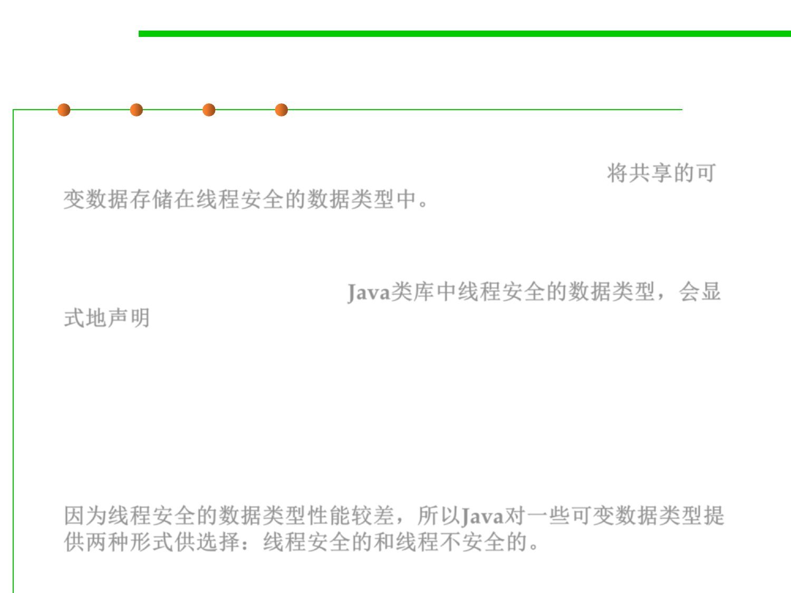

10.1 Concurrency and Thread-Safety
Strategy 3: Using Threadsafe Data Types
▪ The third major strategy for achieving thread safety is to store
shared mutable data in existing threadsafe data types. 将共享的可
变数据存储在线程安全的数据类型中。
▪ When a data type in the Java library is threadsafe, its documentation
will explicitly state that fact. Java类库中线程安全的数据类型，会显
式地声明
▪ It’s become common in the Java API to find two mutable data types
that do the same thing, one threadsafe and the other not.
▪ The reason is what this quote indicates: threadsafe data types
usually incur a performance penalty compared to an unsafe type.
因为线程安全的数据类型性能较差，所以Java对一些可变数据类型提
供两种形式供选择：线程安全的和线程不安全的。